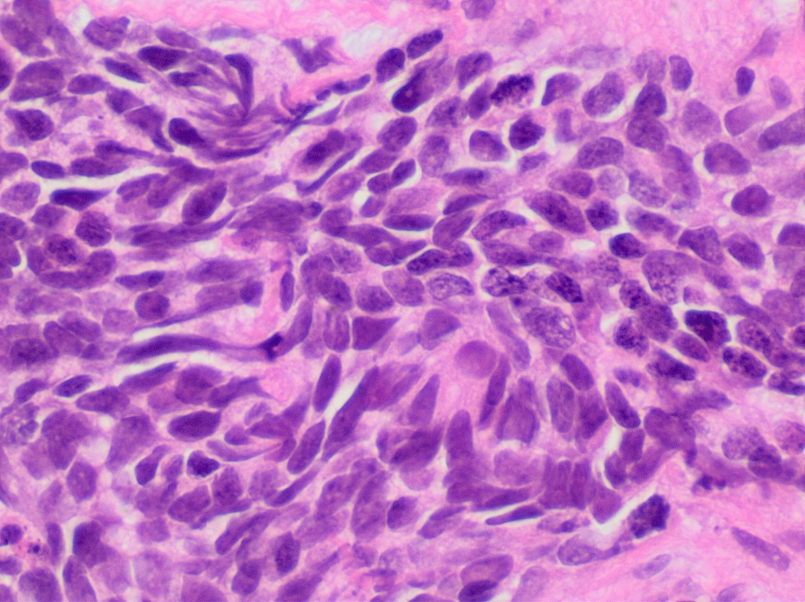

Achado típico
LEMS: canal de Ca e facilitação
E se a força melhorar no começo do movimento? Então o alvo não é o AChR — é o canal de Ca pré-sináptico. Conheça o LEMS.
Alvo = canal de Ca pré-sináptico
Outra doença de placa que cai em prova: síndrome de Lambert-Eaton (LEMS) — também lida como Eaton-Lambert conforme a banca.
LEMS também é doença da placa motora, mas o alvo autoimune é o canal de cálcio (pré-sináptico no terminal axônico) — não o AChR pós-sináptico.
O canal de cálcio na membrana do terminal axônico promove a liberação de ACh. Ataque ao canal de Ca²⁺ → não libera ACh adequadamente → cai a ACh na fenda → fraqueza.
Facilitação
Facilitação: no início do movimento / com estimulação repetitiva inicial, há acúmulo de cálcio no terminal que hipersatura os canais sobreviventes → libera muita ACh → a força melhora no início do uso. Depois pode entrar a lógica de falha de placa.
Bordão: No começo facilita; o alvo é o canal de cálcio.
~50% neoplasia
Em cerca de 50% dos casos, LEMS vem associado a neoplasia.

Mikael Häggström, M.D., via Wikimedia Commons. CC0 1.0. Source: commons:Histopathology_of_small_cell_carcinoma.jpg

CaPC · LEMS ~50%
Carcinoma de pequenas células: células pequenas hipercromáticas, citoplasma escasso, moldagem nuclear. É o tumor mais associado ao LEMS paraneoplásico. A histopathologia ancora o 4º motivo de tórax na trilha de fraqueza.
CaPC e o 4º tórax
Neoplasia mais comum associada: carcinoma pulmonar de pequenas células (CaPC / SCLC).
Quarto motivo de tórax na fraqueza: LEMS → procurar CaPC (fecha o raciocínio do tórax na fraqueza).
Clínica nuclear do LEMS: fraqueza com facilitação — começa a usar e o músculo fica mais forte inicialmente. Preferência muscular: proximal e simétrica de membros; pode pegar face/ptose, mas tende a parecer mais generalizado do que a MG ocular clássica.
Curvas força × uso
MG (decremental)
Só desce: 100% → 80% → 60% → ... com o uso. Repouso reabre a janela.
LEMS (facilitação)
Sobe no início: 30% → 60% → 90% → pico, e depois pode cair.
Sinapse com canal de Ca²⁺ no terminal em destaque + seta "libera ACh"; estado atacado com ↓ liberação.
Quiz
Q1. O alvo autoimune do LEMS é:
Gabarito: B. LEMS ataca o neurônio liberador (canal Ca), não o receptor muscular.
Q2. Facilitação no LEMS significa:
Gabarito: B. No começo melhora (Ca acumula, hipersatura, libera muita ACh).
Q3. Neoplasia mais associada ao LEMS:
Gabarito: B. CaPC — carcinoma pulmonar de pequenas células. ~50% dos LEMS têm neoplasia; CaPC é a mais comum.